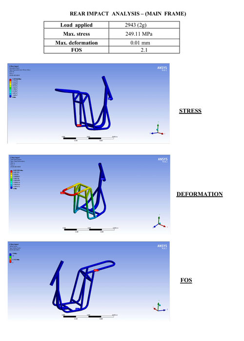
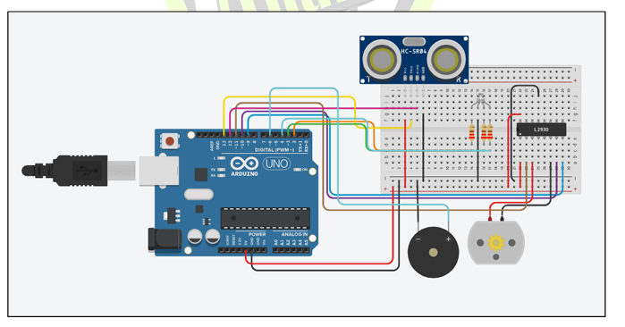

Electric two-wheeler prototype
A fully functional EV prototype built for the Electric Two-Wheeler Design Competition (ETWDC 2020), covering chassis, drivetrain, battery pack, electronics and full-vehicle CAE.


Vehicle at a glance
| Motor | 1 kW BLDC motor |
|---|---|
| Battery | Custom Li-ion pack, 48 V / 24 Ah |
| Range | 30 km per charge |
| Torque / acceleration | 126 N·m final output · up to 1.2 m/s² |
| Chassis | AISI 4130 chromoly tubing, frame and swingarm |
| Crash load cases | 2G front / rear, 1G side |
What I worked on
Chassis & swingarm optimization
Used AISI 4130 tubing to cut weight while keeping crash safety, and validated it with modal and impact simulations (2G front and rear, 1G side).
Full-vehicle CAE
Analysed frame integrity, battery housing and drivetrain loads to confirm the final 126 N·m torque output and 1.2 m/s² acceleration target.
Regenerative braking & ergonomics
Engineered the regenerative braking circuits and ergonomic handlebar interfaces.
Auxiliary systems
Added ultrasonic obstacle detection and variable-intensity automatic headlamps, prototyped on Arduino.

Results
Range per charge from a 48 V / 24 Ah pack
Final torque output, 1 kW BLDC
Front and rear impact load cases validated in CAE (1G side)